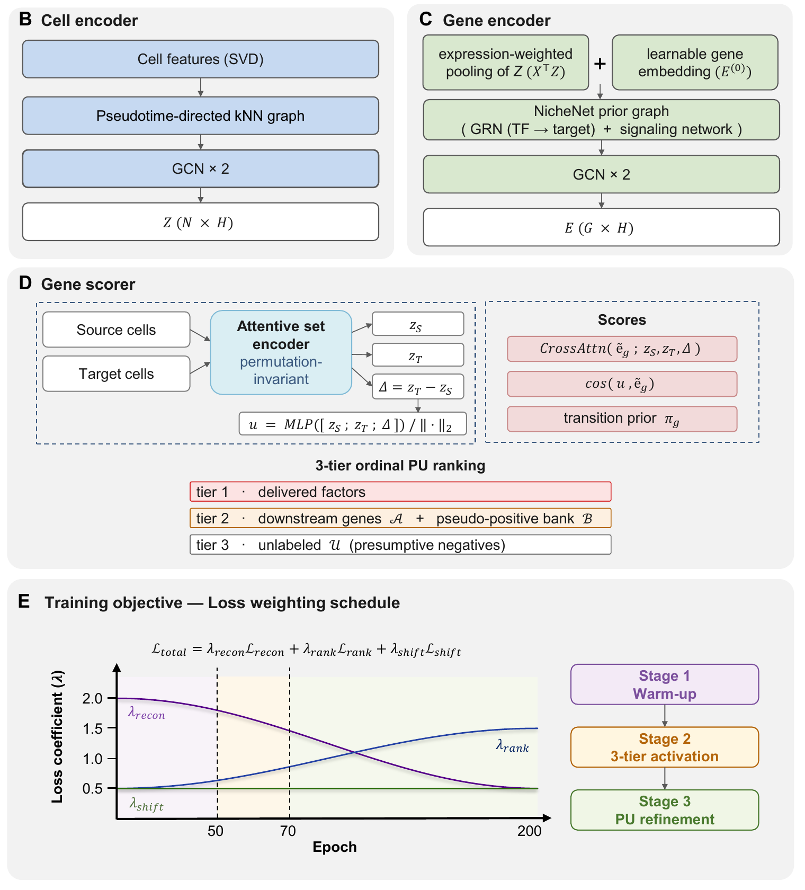

FateDriver: A Dual-View Graph Neural Network for Predicting Driver Genes in Cellular Reprogramming
Reprogramming protocols deliver a handful of transcription factors, but the endogenous regulators working alongside them are only partly known. FateDriver uses the delivered factors as positive labels and predicts, among the unlabeled genes, the endogenous ones that act in a similar way.
- Dual-view graph encoder
- Best recovery of enhancer/barrier
- Transferability

Problem
Cellular reprogramming converts one lineage into another through delivered factors — OSKM for pluripotency, GMT for cardiac conversion. But the delivered factors are not the whole story: the resulting fate is governed by intrinsic regulatory networks, and the endogenous genes that orchestrate the conversion are largely unknown.
Existing methods lean on a pre-built gene regulatory network. CEFCON applies network control theory to an inferred GRN, SwitchTFI fits a decision-tree switch to each GRN edge, TENET scores transfer entropy along pseudotime, Fatecode perturbs an autoencoder latent code. Where a prior network carries the ranking, the ranking inherits the network’s bias: well-studied genes have many curated edges, so high degree in the reference — an artefact of how much attention a gene has received — pushes them to the top regardless of what the dataset shows. A method that scores by connectivity in the literature is not scoring the transition in front of it. The same prior also bounds what is rankable at all, so a gene absent from the network cannot be returned even when the data speak clearly about it.
FateDriver builds its space from the data instead. Cells and genes are embedded from the measured expression and the pseudotime direction of the transition itself, and supervision comes from the delivered factors used as positive labels — so a gene is ranked by how it behaves in this conversion, not by how connected it is in a reference network. The prior network is kept only as a light refinement of gene positions, never as the backbone of the score, which is what keeps the degree bias out of the ranking.
Approach
Cells and genes are embedded in one shared space, so a gene can be scored directly against the source→target direction. The model is still in preparation, so the sketch below is deliberately brief.

- Cell encoder. A kNN graph over cells, kept directed by pseudotime, is passed through a GCN — so the cell space carries the direction of the transition, not just similarity.
- Gene encoder. Each gene starts from expression-weighted pooling of the cell embeddings plus a learnable gene embedding, then is refined over the NicheNet prior graph.
- Gene scorer. Source and target populations are summarised by a permutation-invariant set encoder; a gene is scored against them by cross-attention, cosine alignment with the transition direction, and a transition prior read from the data.
- Supervision. Three ordinal tiers — delivered factors, downstream genes, then the unlabeled remainder — treated as a positive–unlabeled problem, since untested genes are not confirmed negatives.
- Training. Reconstruction, ranking, and shift-consistency losses take effect in turn: warm-up, tier activation, then PU refinement.
Results
Benchmarked on three scRNA-seq datasets spanning both conversion systems — two OSKM-driven human iPSC datasets (GSE297234, GSE242423) and one GMT-driven mouse cardiac dataset (GSE98567) — against the four existing methods plus an expression-only MLP sharing FateDriver’s labels, splits and objective.
Where do the delivered factors land? Mean rank out of 3,000 genes, lower is better.
| Method | GSE297234 | GSE242423 | GSE98567 |
|---|---|---|---|
| FateDriver | 2.5 | 5.0 | 2.0 |
| Expression-only MLP | 6.3 | 632.8 | 33.3 |
| CEFCON | 2.8 | 806.0 | — |
| SwitchTFI | 12.3–26.7 | 12.3–26.7 | 12.3–26.7 |
| TENET / Fatecode | hundreds–thousands | hundreds–thousands | hundreds–thousands |
Does it recover independently curated regulators? Scored as AUROC against externally curated reprogramming enhancers and barriers, where 0.5 is chance. FateDriver was highest on two datasets (0.93 and 0.74) and second on the third (0.87). TENET reached 0.90 on one, but ranked only 387 genes and covered three curated positives against ten for FateDriver; its cardiac AUROC was 0.41.
Is it just finding co-expressed genes? This is the result that separates the two. The MLP produced the top-100 genes most correlated with the delivered factors in every dataset (r = 0.87, 0.96, 0.60) yet recovered less of the curated set than FateDriver, whose own co-expression was low (0.17, 0.15, 0.47). Sharing an expression pattern with the delivered factors and recovering curated regulators do not track each other — and FateDriver is doing the second, not the first.
A score belongs to a transition, not to a gene. Two transcriptionally distinct fibroblast states from one heterogeneous culture were scored against a common iPSC target. The rankings differed over four-fifths of their content: 82 genes specific to each state, only 18 shared. Those 18 were the four delivered factors plus the senescence barrier Cdkn1a, Cdkn2a and Serpine1. The two sets also moved in opposite directions along the trajectory — 79 of 82 baseline-specific genes switched on, 75 of 79 primed-specific genes switched off — and each kept its direction when scored along a fate axis neither ranking had used.
Partial versus complete reprogramming. Scored against two endpoints reached from the same fibroblasts, FateDriver returned different gene sets. Among the genes specific to the partial endpoint, DDX58 (RIG-I, which initiates the type I interferon response) best separated single cells that activated the endogenous pluripotency program from those that did not (AUROC 0.711 young donor, 0.851 aged). The relationship is graded rather than all-or-none: across eight strata of interferon-stimulated gene score, the fraction of day-10 cells that reprogrammed fell from 32.8% to 1.2% in the young donor and 26.1% to 0.4% in the aged.
Transfer to a dataset with no defined source. Applied to a population partially reprogrammed in vivo in mouse intestine, FateDriver ranked crypt base columnar cells highest among candidate origins (source affinity 0.396, 1.7× the next candidate). CytoTRACE2, an independent measure, scored CBC highest for developmental plasticity — support from a method that shares none of FateDriver’s assumptions.
Citation
@article{sung2026fatedriver,
title = {FateDriver: A Dual-View Graph Neural Network for Predicting
Driver Genes in Cellular Reprogramming},
author = {Sung, Jieun and Son, Kyuwon and Cha, Hyuk-Jin and
Kim, Wankyu and Lee, Haeseung},
note = {Manuscript in preparation. Sung and Son contributed equally},
year = {2026}
}